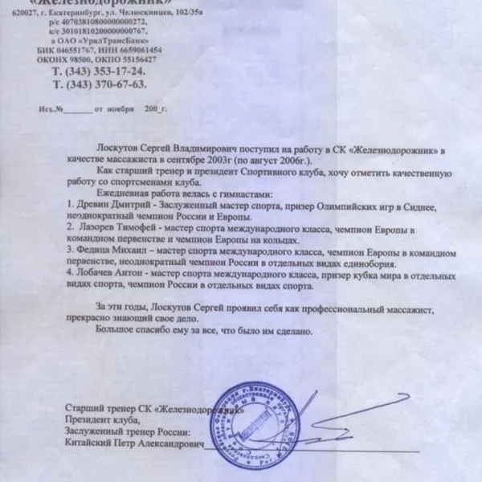
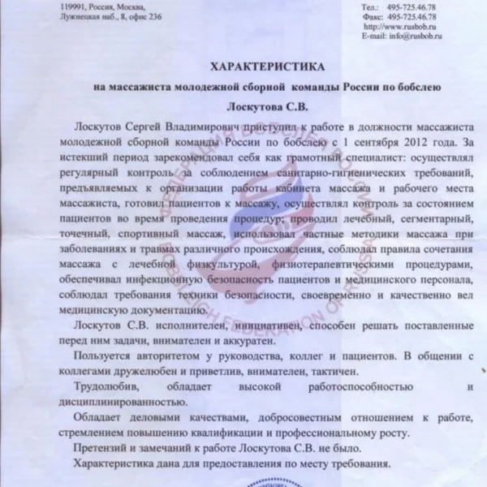
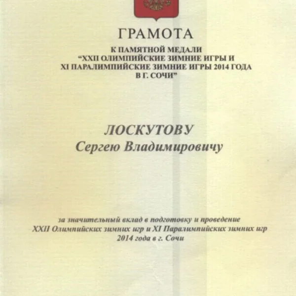
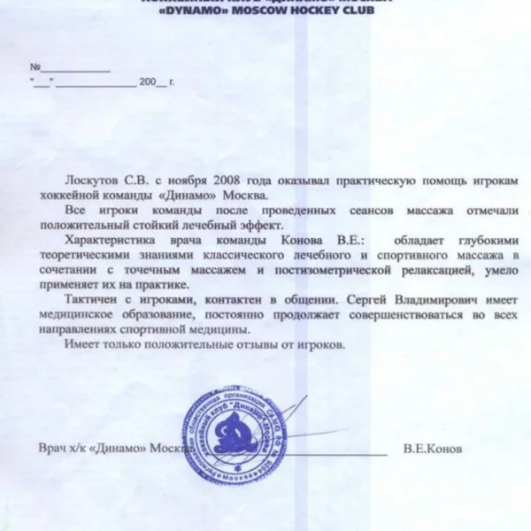

Работал в Коиниказ Управления Делами Президента, ФМБА России Центр Сборных Команд! Имею Госнаграды по работе в этой сфере. Приуспел в Лечении Профилактики Реабилитации различных заболеваний травм.
Уникальный подход в лечении: опорно- двигательного аппрета, в неврологии, восстановление сил, улучшение качества Сна, после Covid19, снять и профилактика стресса, восстановление либидо, подготовка к Важным встречам соревнованиям и т.д.




Материалы института: itvm.ru ↗ · Информация на 26 октября 2026 года.